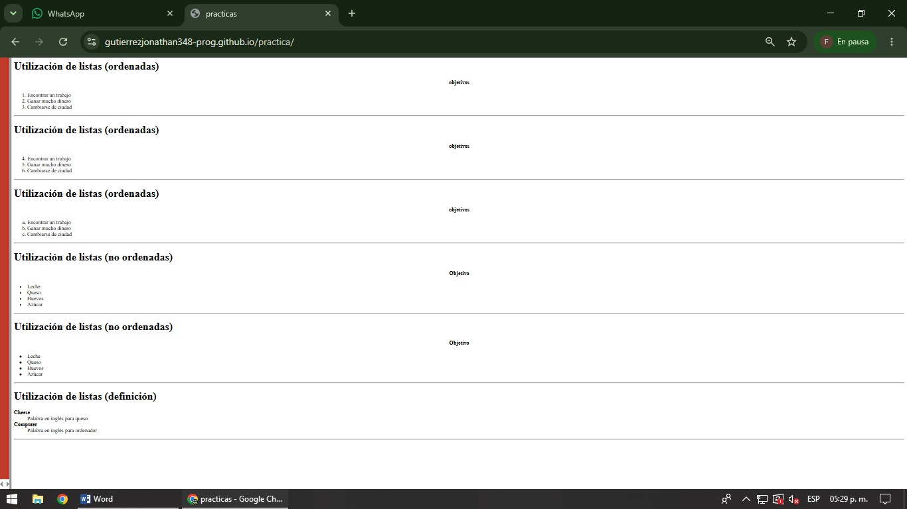

En esta práctica se trabaja con la creación y organización de listas utilizando HTML. La etiqueta permite crear listas ordenadas mostrando automáticamente una numeración para cada elemento, mientras que la etiqueta ul se utiliza para crear listas no ordenadas que muestran viñetas en lugar de números. Dentro de ambos tipos de listas se emplea la etiqueta li, la cual representa cada elemento individual de la lista. También se utilizan listas de definición mediante las etiquetas dl, dt y dd, donde dl define la lista completa, dt representa el término y dd contiene su descripción correspondiente. Estas etiquetas permiten organizar información de forma clara y estructurada, facilitando la lectura y comprensión de los contenidos. El objetivo de esta práctica es aprender a utilizar diferentes tipos de listas para mejorar la organización de la información dentro de una página web.